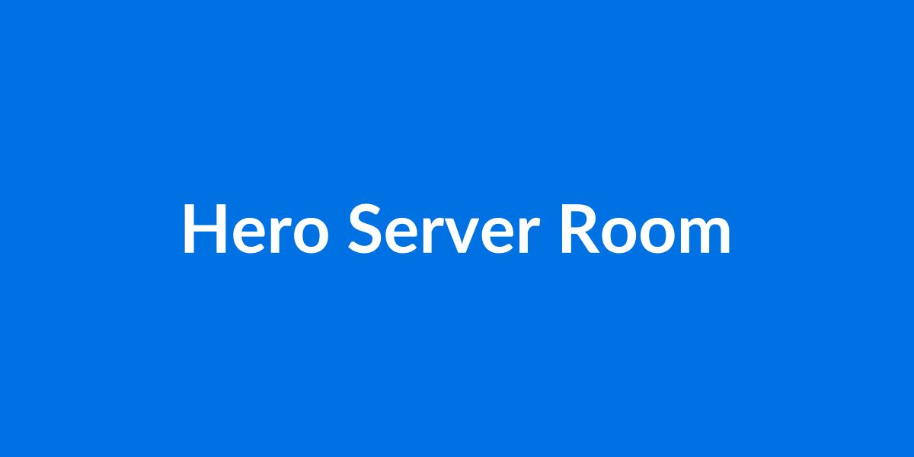
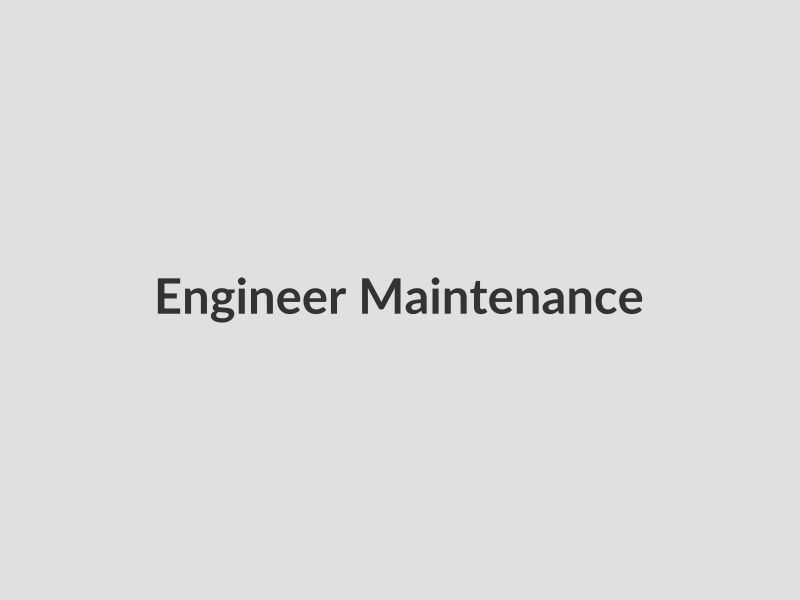
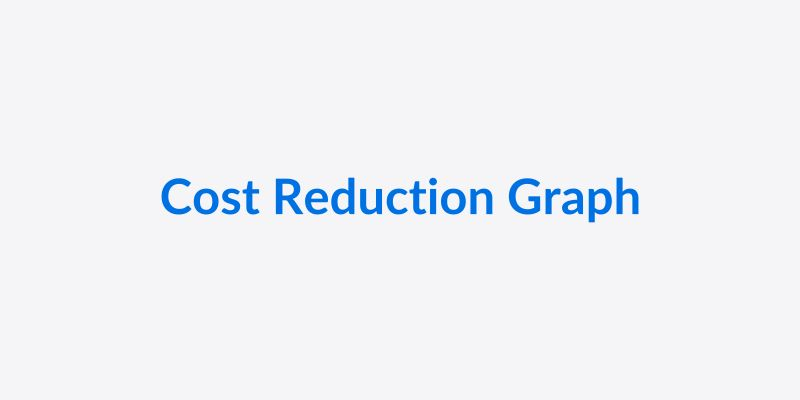
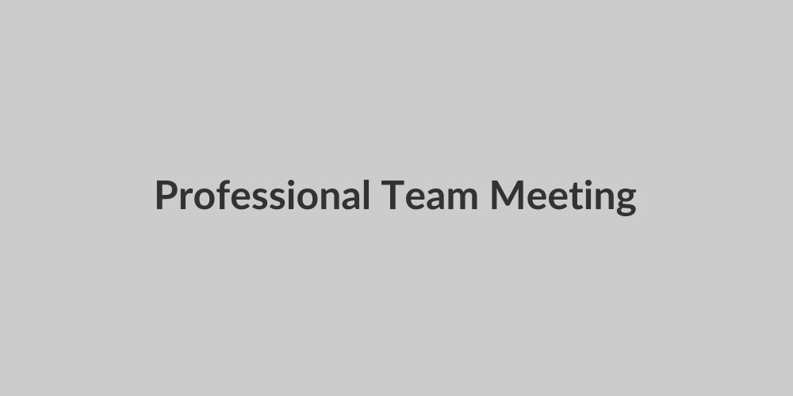

メーカーの保守サポート終了(EOSL)が迫っているが、リプレイスの予算がない。
ハードウェア自体は安定稼働しており、無理にリプレイスする必要性を感じない。
高額なメーカー保守費用やリプレイス費用を見直し、ITコストを最適化したい。
メーカーに代わり、独立した第三者がハードウェアの保守を行うサービスです。メーカー保守終了後も、慣れ親しんだシステムを安全に使い続けることができます。

メーカー保守と比較して、保守費用を最大50%削減可能。さらにリプレイスの延期により、長期的なIT投資を最適化します。

安定稼働しているシステムを無理に刷新する必要はありません。使い慣れた環境をそのまま継続利用できます。
短期から長期まで、お客様の計画に合わせて柔軟に契約期間を設定可能です。つなぎの保守としても最適です。
対象機器の型番・構成情報をお知らせください。
在庫状況を確認し、迅速に概算のお見積りをご提出します。
必要に応じて現地調査を行い、正式なお見積りと保守仕様書をご提示します。
契約締結後、保守パーツを確保し、サービスを開始します。
経験豊富なエンジニアと、徹底した品質管理されたパーツで、
メーカー保守同等の安心をお届けします。

HPE, Dell, IBM, Cisco, Oracle(Sun), Fujitsu, NECなど、国内・海外主要メーカーに対応しております。詳細はお問い合わせください。
24時間365日の受付・駆けつけ対応が可能です。お客様のSLA要件に合わせてプランをご提案いたします（例：4時間駆けつけ、翌営業日対応など）。
独自の厳しい検査基準をクリアした再生品（リファビッシュ）を使用します。すべてのパーツは動作確認済みで、初期不良保証も付帯します。